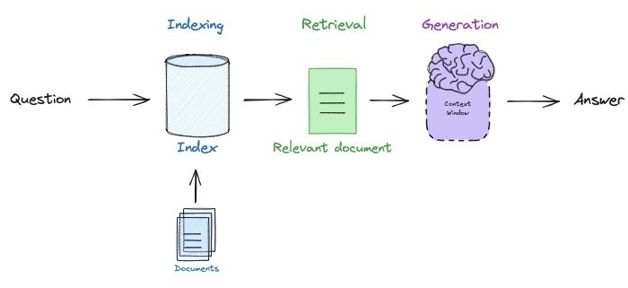
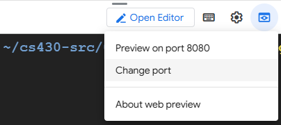
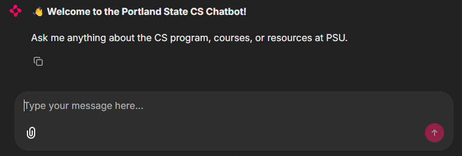

One of the more common chains one might build is a "retrieval augmented generation" (RAG) chain. This chain addresses the problem of generative models producing or fabricating results that are incorrect, sometimes referred to as hallucinations. Consider the application below where a user wants to ask a question to a set of documents in a knowledge base. With RAG, one indexes the documents and the question that is being asked by the user. Based on the similarity of questions and particular documents in the index, the question and the relevant document is sent to the generation model to produce the answer.

Bring up a Cloud Shell session and install uv and update your path by sourcing the modified .bashrc after installation.
uv is a very fast Python package manager, similar to pip.
curl -LsSf https://astral.sh/uv/install.sh | sh source ~/.bashrc
Then change into the source directory containing the examples, create a virtual environment, activate it (uv init), and install the
requried packages (uv add).
cd gensec-class/02_LangChain/07_RAG git pull uv init --bare uv add -r requirements.txt
A simple RAG application is provided for you in this directory of the course repository. It is split up into two main
parts: a document loading part and a querying part. The document loading part takes a set of documents
in a variety of formats, generates vector embeddings for them, and then inserts them into a vector database.
The code first instantiates the vector database (Chroma) as well as the vector embedding model (from Google),
storing the vector database locally in the filesystem. It then defines a function
load_docs, that takes a set of documents from a document loader, splits them into
chunks using a text splitter (RecursiveCharacterTextSplitter), and adds them to the vector
store using the embedding model.
The original code in file 02_LangChain/07_RAG/07_rag_loaddb.py
used GoogleGenerativeAIEmbeddings to compute the embeddings for the documents,
as follows:
from langchain_community.vectorstores import Chroma
from langchain_google_genai import GoogleGenerativeAIEmbeddings
from langchain.text_splitter import RecursiveCharacterTextSplitter
vectorstore = Chroma(
persist_directory="./rag_data/.chromadb", # directory to store the vector database
embedding_function=GoogleGenerativeAIEmbeddings( # object for the embedding model that computes them
model="models/embedding-001", # model name
task_type="retrieval_query"
)
)
def load_docs(docs):
text_splitter = RecursiveCharacterTextSplitter(chunk_size=10000, chunk_overlap=10)
splits = text_splitter.split_documents(docs)
# add the chunks to the vector database
vectorstore.add_documents(documents=splits)
Computing embeddings is token-heavy, plus, chunking a big file involves sending many
requests to the embedding service in a short time.
With GoogleGenerativeAIEmbeddings, computing the embedding for the PDF files in this program causes a
GoogleGenerativeAIError exception with the error message
"Error embedding content (RESOURCE_EXHAUSTED): 429 RESOURCE_EXHAUSTED. {'error': {'code': 429, 'message': 'You exceeded your current quota, ..."
It turns out that Google prohibits accounts with educational credits from having a credit card (or some other payment method) and
it keeps them in the Free Tier, that has quotas: RPD (requests per day), RPM (requests per minute), TPM (tokens per minute).
The TPM quota is exceeded when executing this statement in file 07_rag_loaddb.py, on line 72:
vectorstore.add_documents(documents=splits)To mitigate the situation we will use an alternative embedding model from Google,
VertexAIEmbeddings,
which has higher quota limits than GoogleGenerativeAIEmbeddings.
In addition, the VertexAIEmbeddings service uses your GCP Project ID for billing.
The current code in file 07_rag_loaddb.py give the user the option to use either GoogleGenerativeAIEmbeddings
or VertexAIEmbeddings by setting the variable use_vertex_embeddings to False or True:
from langchain_google_vertexai import VertexAIEmbeddings
# Configure the embedding model used when adding documents to Chroma.
embedding_function = VertexAIEmbeddings(
model_name="gemini-embedding-001",
project=os.getenv("GOOGLE_CLOUD_PROJECT"),
location="us-west1"
)
# set to True to use VertexAI embeddings. Ignore the deprecation message for now.
use_vertex_embeddings = True
if use_vertex_embeddings:
vectorstore = Chroma(
embedding_function=embedding_function,
persist_directory="./rag_data/.chromadb" # <===== location of the vector store database. Run once and reuse.
)
else:
# original repo code uses Google AI studio, that cause a rate limit quota error.
vectorstore = Chroma(
embedding_function=GoogleGenerativeAIEmbeddings(model="models/gemini-embedding-001", task_type="retrieval_query"),
persist_directory="./rag_data/.chromadb"
)Ensure you have successully set up kali-vm to allow you to connect from your PC with the Remote Desktop client, as done in Lab 01.1 Setup. Then, open a terminal window (console) on the kali-vm desktop user interface and follow instructions below.
Setup the following environment variable (in
~/.bashrcor some other script) before running the programs:
export GOOGLE_CLOUD_PROJECT="YOUR_GCP_PROJECT_ID"Use your Google cloud project ID, not the project name. You can find it in the Google Cloud console, under IAM & Admin -> Settings.
Ensure that you have the following lines in file
requirements.txtin directory
02_LangChain/07_RAGthe following line:
langchain-google-vertexai
google-cloud-aiplatform
This adds two packages to the current virtual environment, needed to use VertexAI.
Then, run the following command to install these packages.
uv add -r requirements.txt
Next, authenticate your kali-vm environment with your Google account (no API keys needed):
gcloud auth application-default login.
This opens a browser window on the kali-vm desktop user interface to log in your google cloud account
and to give various access permissions.
Any new Google API service needs to be enabled before use.
Go to the Google Cloud console and execute these shell commands:
# Set project from bash:
gcloud config set project $GOOGLE_CLOUD_PROJECT
# enable VertexAI API:
gcloud services enable aiplatform.googleapis.com
# specify which Google Cloud project will be charged for API quotas and billing for API requests
gcloud auth application-default set-quota-project $GOOGLE_CLOUD_PROJECT
Note that the Github loader requires a GitHub personal access token to work. You can set it as an environment variable GITHUB_PERSONAL_ACCESS_TOKEN or pass it as a parameter to the GithubFileLoader constructor.
Using this function, it loads a range of documents of various types. For example, the loader below (AsyncHTMLLoader) will download and parse HTML content for a set of URLs given to it
from langchain_community.document_loaders import AsyncHTMLLoader
def load_urls(urls):
load_docs(AsyncHTMLLoader(urls).load())Some web sites are so commonly accessed that custom loaders can be written that are tailored for the content they provide. A few examples are Wikipedia and arXiv. We can utilize these loaders based on a query we provide to the site as shown in the code below.
from langchain_community.document_loaders import WikipediaLoader, ArxivLoader
def load_wikipedia(query):
load_docs(WikipediaLoader(query=query, load_max_docs=1).load())
def load_arxiv(query):
load_docs(ArxivLoader(query=query, load_max_docs=1).load())Another useful example is the GitHub document Loader. The GitHub document loader below utilizes the personal access token set up previously to load code from the course's GitHub repository into the vector database. There are two separate loaders that can be employed: a file loader and an issues loader. The issue loader can be used to load PRs and issues, while the file loader can be used to load the content of the files in the repository.. In this example we will use the file loader.
def load_github(file):
loader = GithubFileLoader(
repo="wu4f/cs475-src", # the repo name
branch="main", # the branch name
github_api_url="https://api.github.com",
file_filter=lambda file_path: file_path.endswith(
file
), # File from the last week in class
)
documents = loader.load()
load_docs(documents)Finally, we can create our own custom document loader, by retrieving content from a source and then utilizing the underlying Document class to create a document from it. Consider the code below that uses the YouTube Transcript package to load a transcript from an arbitrary video given its YouTube video ID. The code extracts all of the entries in the transcript and combines them into a single document and then sets the metadata of the Document to indicate its source.
def load_youtube(video_id):
transcript = YouTubeTranscriptApi.get_transcript(video_id)
text = ' '.join([entry['text'] for entry in transcript])
docs = [Document(page_content=text, metadata={'source': f'youtube:{video_id}'})]
load_docs(docs)While the above loaders are good for web sources, it may be the case that we want the RAG application to load directories containing documents of text files, PDFs files, Microsoft Word files, Markdown files, and CSV files. Each format has its own specialized loader to handle its conversion into text. In addition, a generic DirectoryLoader class can be leveraged to load a directory of files of a particular file type (e.g. TextLoader, PyPDFLoader, Docx2txtLoader, UnstructuredMarkdownLoader, CSVLoader).
from langchain_community.document_loaders import DirectoryLoader,
TextLoader, PyPDFDirectoryLoader, Docx2txtLoader, UnstructuredMarkdownLoader,
WikipediaLoader, ArxivLoader, CSVLoader
def load_txt(directory):
load_docs(DirectoryLoader(directory, glob="**/*.txt", loader_cls=TextLoader).load())
def load_pdf(directory):
load_docs(PyPDFDirectoryLoader(directory).load())
def load_docx(directory):
load_docs(DirectoryLoader(directory, glob="**/*.docx", loader_cls=Docx2txtLoader).load())
def load_md(directory):
load_docs(DirectoryLoader(directory, glob="**/*.md", loader_cls=UnstructuredMarkdownLoader).load())
def load_csv(directory):
load_docs(DirectoryLoader(directory, glob="**/*.csv", loader_cls=CSVLoader).load())The RAG application in the repository loads a set of URLs as well as a set of local documents stored in the repository. We first load two URLs related to Portland State's Department of Computer Science, then Wikipedia's information on LangChain, and lastly a research paper from arXiv related to an automatic compiler for LLMs called DSPy.
load_urls(["https://www.pdx.edu/academics/programs/undergraduate/computer-science",
"https://www.pdx.edu/computer-science/"])
load_wikipedia("LangChain")
load_arxiv("2310.03714")
load_github("butcher.py")
load_youtube("78600iosmis")The corpus also includes a set of local files of varying formats. Specifically, the text files contain the full text of the US Constitution and its amendments, the PDF file contains Python documentation, the docx file contains famous quotes, the Markdown file contains a tutorial on the Markdown format, and the CSV file contains nutritional information on popular breakfast cereals.
txt/constitution.txt docx/FamousQuotes.docx txt/amendments.txt md/Markdown.md pdf/python_cheat_sheet.pdf csv/cereal.csv
The code then loads the set of local files into the vector database using their respective loading functions.
load_txt("rag_data/txt")
load_pdf("rag_data/pdf")
load_docx("rag_data/docx")
load_md("rag_data/md")
load_csv("rag_data/csv")Finally, after inserting the document corpus, we can examine the documents in the database through the metadata that is generated and stored during document loading. The code below goes through all of the chunks in the database and extracts their sources, printing out a list of document locations.
document_data_sources = set()
for doc_metadata in retriever.vectorstore.get()['metadatas']:
document_data_sources.add(doc_metadata['source'])
for doc in document_data_sources:
print(f" {doc}")Run the document loading code that has been implemented in the repository.
uv run 07_rag_loaddb.py
Once we have ingested the various documents into the vector database, it's a simple matter of doing a similarity search on the database with a particular query, to find documents that are closely related to the query. The function shown below performs this:
def search_db(vectorstore, query):
docs = vectorstore.similarity_search(query)
print(f"Query database for: {query}")
if docs:
print(f"Closest document match in database: {docs[0].metadata}")
else:
print("No matching documents")Run the document loading and searching code that has been implemented in the repository. The code implements an interactive interface for performing searches on the vector database given a query that the user enters.
uv run 08_rag_docsearch.py
Search the database to find the documents that are most related to the following queries.
What will PSU's Computer Science degree prepare me for? Who created LangChain? What is the DSPy programming model? What is the persona used in the Pig Butcher Python program? How do I remove a scratch on a car? What is the first amendment of the Constitution? What is Python used for? What are some famous quotes from Martin Luther King Jr? How do you create a heading in Markdown? How many calories per serving are in Honey Nut Cheerios?
So far, in our RAG application, we've loaded our documents, split them into chunks, created vector embeddings for each chunk, inserted them into a vector database, and performed searches on the database given a query. In this step, we can now implement the rest of our RAG application by taking a query and the contents of the document that is most closely similar to it, and sending it to our LLM to answer.
Much like GitHub is a repository for useful source code, DockerHub is a repository for useful containers, and HuggingFaceHub is a repository for useful machine learning models, LangChainHub is a central resource for sharing and discovering useful prompts, chains and agents that one can combine together to form complex LLM applications. In our RAG application we want the prompt to include not only the user's query, but also all relevant documents that can answer the query. This can then be sent to the model to produce the result. Towards this end, we can pull a useful prompt template from LangChain Hub via its name as shown in the code below. Additionally, we can print it out.
from langchain import hub
prompt = hub.pull("rlm/rag-prompt")
prompt.pretty_print()This leads to the following output.
You are an assistant for question-answering tasks. Use the following pieces
of retrieved context to answer the question. If you don't know the answer,
just say that you don't know. Use three sentences maximum and keep the
answer concise.
Question: {question}
Context: {context}
Answer:
After setting the prompt, the next step is to open the vector database and instantiate a retriever that will return the most relevant documents in the database related to the user's query.
from langchain_community.vectorstores import Chroma
vectorstore = Chroma(
persist_directory="./rag_data/.chromadb",
embedding_function=GoogleGenerativeAIEmbeddings(
model="models/embedding-001",
task_type="retrieval_query"
)
)
retriever = vectorstore.as_retriever()When the retriever is invoked with a user's input, it returns a set of document chunks related to the query. In order to pass all of this through as a single context to the template, we define a function to concatenate the chunks together so they can be included into the prompt that is sent to the model.
def format_docs(docs):
return "\n\n".join(doc.page_content for doc in docs)With the prompt template, the vector database, and the retriever set, we can then instantiate the RAG chain that performs the document querying. As shown in the code below, the first part of the chain pulls the related document chunks from the retriever and concatenates them together, setting the context key with the result. The question key is then set to the user's input. With these two set, they can be sent to the prompt template to create the final prompt which is sent to the model.
rag_chain = (
{"context": retriever | format_docs, "question": RunnablePassthrough()}
| prompt
| llm
| StrOutputParser()
)We can now test our application. Run the querying program and ask a set of questions related to the source documents that have been inserted into the vector database.
uv run 09_rag_query.py
Test some of the prior document search queries to determine how reliable the application is.
What will PSU's Computer Science degree prepare me for? Who created LangChain? What is the DSPy programming model? What is the persona used in the Pig Butcher Python program? How do I remove a scratch on a car? What is the first amendment of the Constitution? What is Python used for? What are some famous quotes from Martin Luther King Jr? How do you create a heading in Markdown? How many calories per serving are in Honey Nut Cheerios?
Chainlit is an open-source Python package to build production ready Conversational AI. The prior steps have initialized the vector database and implemented an LLM chain to query the documents in it. We can build a simple web interface for the application using the code below.
import chainlit as cl
@cl.on_chat_start
async def on_chat_start():
welcome_text = (
"**Welcome to the PSU Generative Security Chatbot!**\n\n"
"Ask me anything from my set of documents.\n\n"
)
await cl.Message(content=welcome_text).send()
@cl.on_message
async def on_message(message: cl.Message):
user_query = message.content
answer = rag_chain.invoke(user_query)
await cl.Message(content=answer).send()
if __name__ == "__main__":
cl.run()As the code shows, we import the RAG chain from the query program, then register 2 event handlers. The first sends a welcome message when the chat interface is loaded. The other responds to a user query, sending the message to the RAG chain and returning its results. Run the application, allowing connections from all hosts.
uv run chainlit run --host 0.0.0.0 10_chainlit_rag_query.pyBy default, the application will listen on port 8000. Click on Cloud Shell's Web Preview icon and then change the port to 8000 to view the Chainlit application running.

If the preview does not work after changing the port, try opening a firewall port in the cloud console:
gcloud compute firewall-rules create default-allow-8000 --allow=tcp:8000 --target-tags=http-serverThen open up http://<EXTERNAL_IP>:8000/ in your web browser.

Query the chatbot to see that it is able to respond to your questions.
Back in Cloud Shell, Ctrl+c to exit the application.